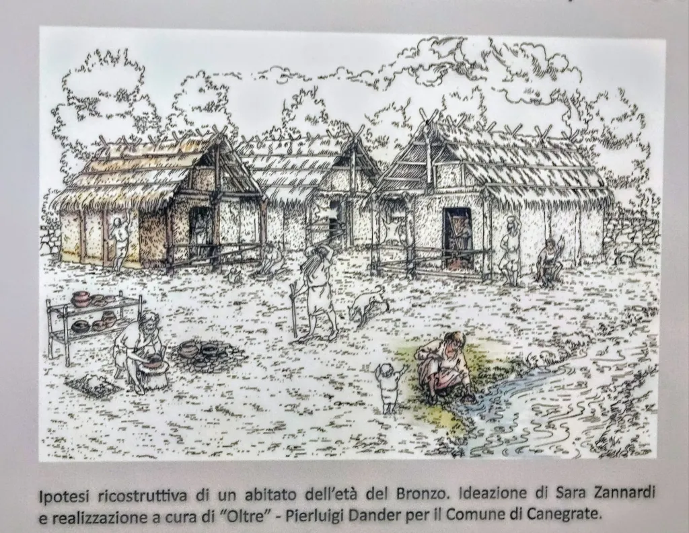
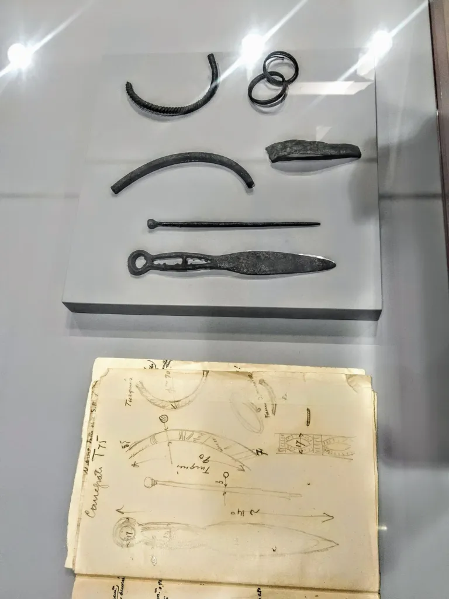
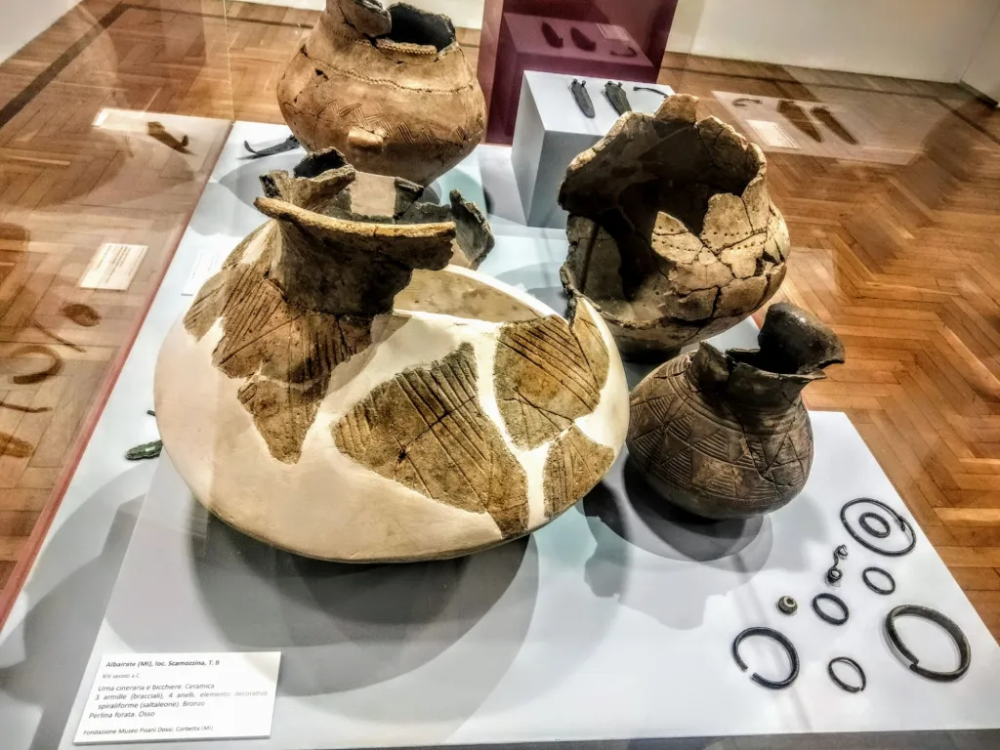
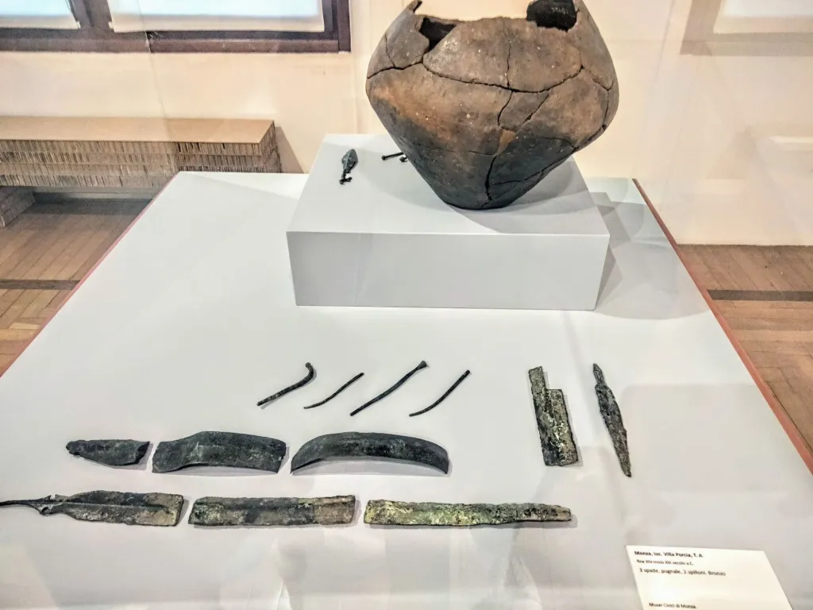
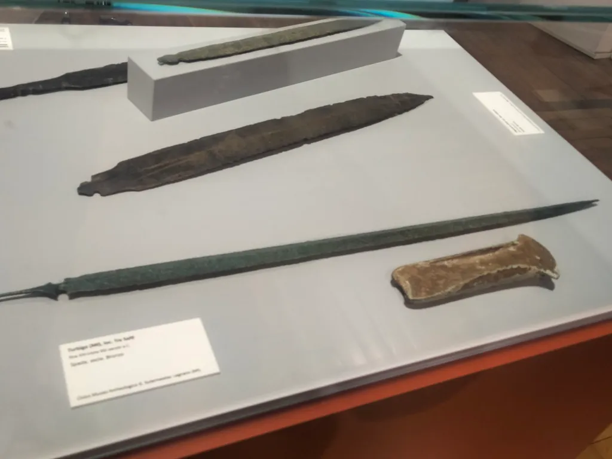
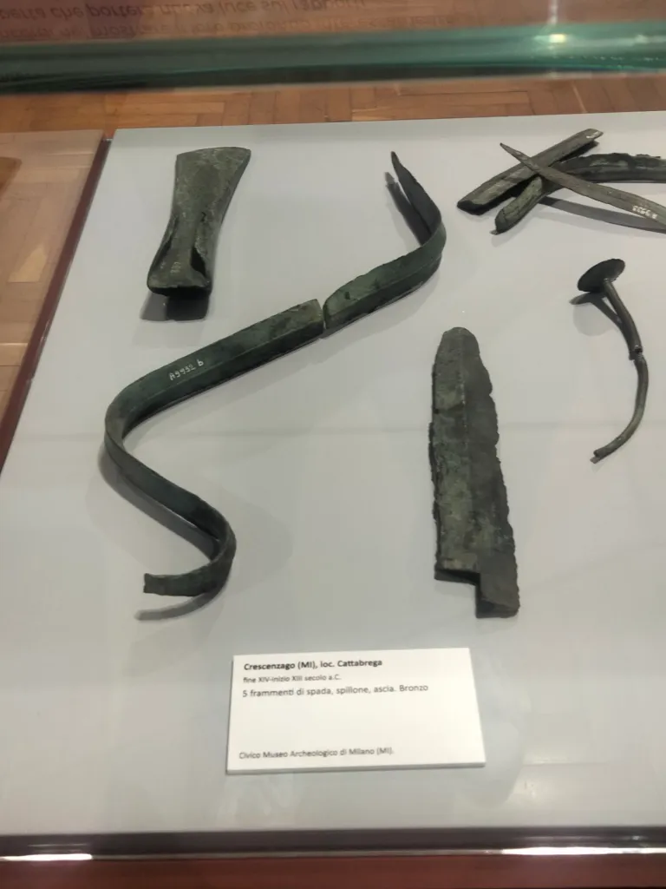
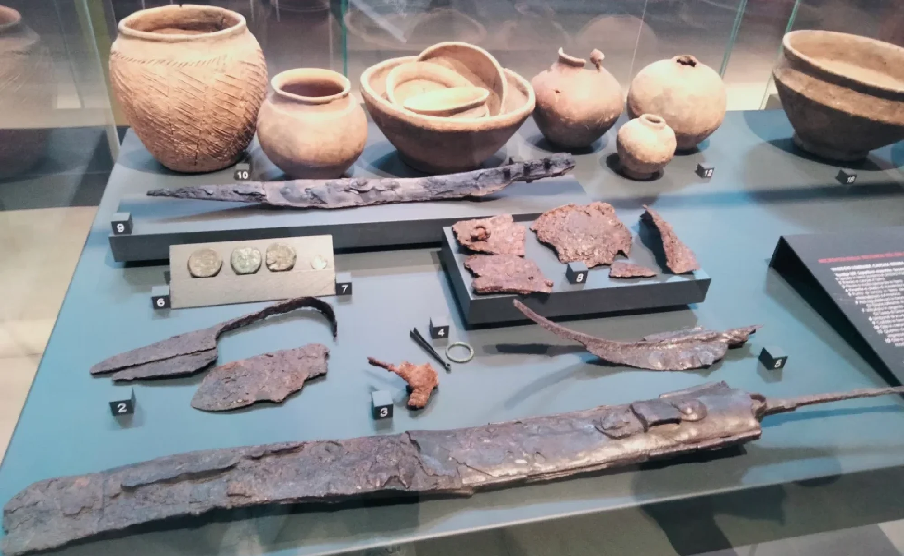
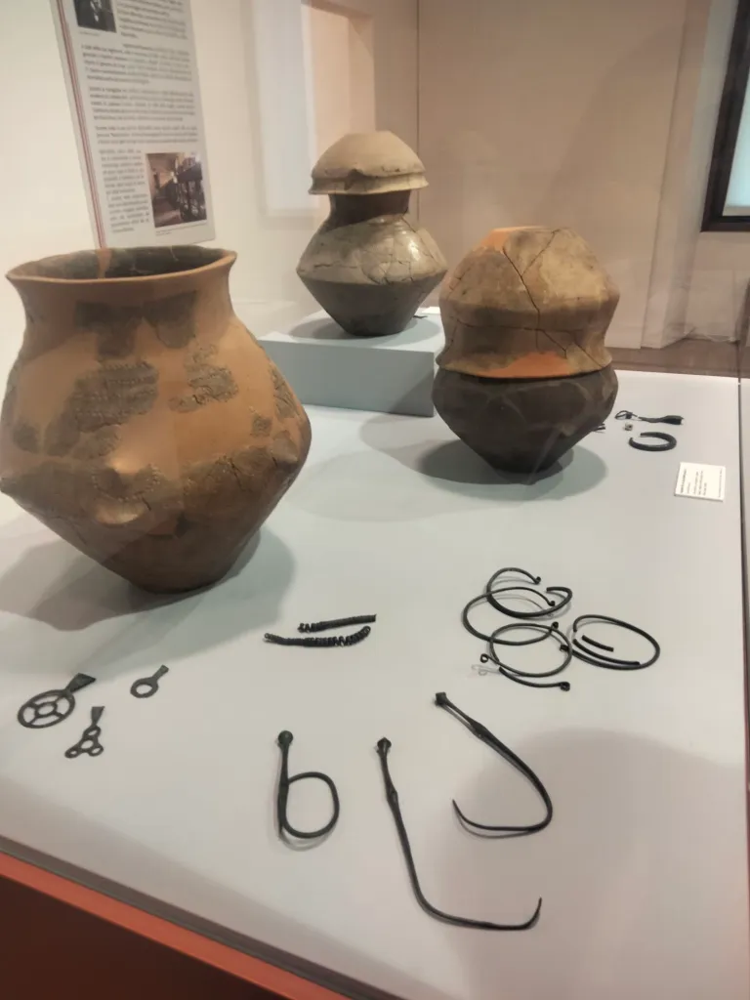

The Proto-Celtic Foundations of Western Lombardy (13th Century BC)
The Canegrate culture represents a fundamental phase in the formation of the early proto-historic civilizations in Lombardy. It is strictly defined as "Proto-Celtic" because it is the direct precursor to the Golasecca culture—the first historically recognized Celtic civilization in Italy. Unlike other regions, Western Lombardy shows a remarkable cultural continuity from the Late Bronze Age (Canegrate) to the Iron Age (Golasecca), without any traumatic shifts or external invasions.

Reconstructive hypothesis of a Bronze Age settlement. Concept by Sara Zannardi, realized by "Oltre" - Pierluigi Dander for the Municipality of Canegrate.The rediscovery of this lost world began in 1926, when engineer Guido Sutermeister identified the first burial remains. However, the scientific definition of the "Canegrate Culture" was established through the systematic excavations led by Ferrante Rittatore Vonwiller between 1953 and 1956. These campaigns unearthed a massive necropolis comprising approximately 165 tombs, located in the modern-day municipality of Canegrate (Milan).

Original archaeological notes and sketches regarding the findings in Canegrate, showcasing the meticulous documentation of bronze ornaments and pins (T75).The hallmark of Canegrate is the cremation rite. The deceased were cremated on a funeral pyre, and their ashes were placed in ceramic urns. These urns were often buried in simple pits, sometimes protected by stone slabs. This "Urnfield" tradition marks a significant connection to the contemporary cultures of Central Europe.

Albairate (MI): Scamozzina locality. Cinerary urns and drinking vessels from the 14th century BC. Note the intricate geometric decorations.The Canegrate people were master metallurgists. The bronze production found in the Olona and Ticino valleys shows a high level of technical skill. The "Canegrate-type" swords are particularly famous—short, sturdy, and designed for both thrusting and cutting. These findings suggest a highly mobile warrior class with strong transalpine ties.

Monza: Villa Porcia locality. Late 14th-early 13th century BC. Findings include three bronze swords, a dagger, and two pins (spilloni).
Turbigo (MI): Tre Salti locality. Bronze swords from the late 14th century BC, showcasing the evolution of weaponry in the region.
Crescenzago (MI): Cattabrega locality. Bronze fragments including a sword, a pin, and an axe (ascia). Archaeological Museum of Milan.Beyond warfare, the archaeological record provides insights into daily life. Bronze ornaments such as pins, rings, and bracelets (armille) were common burial gifts, indicating a society with clear social distinctions and a taste for personal adornment.

A collection of ceramic vessels and bronze tools from the Canegrate period, showing the variety of shapes used for domestic purposes.
Bronze rings and ornaments found alongside cinerary urns, demonstrating the metallurgical complexity of the Proto-Celtic craftsmen.